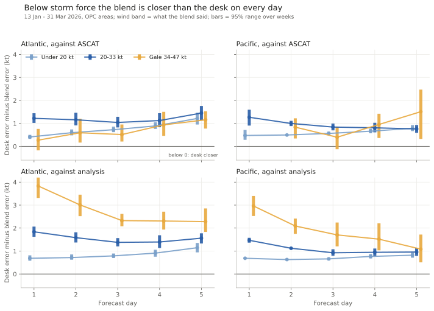
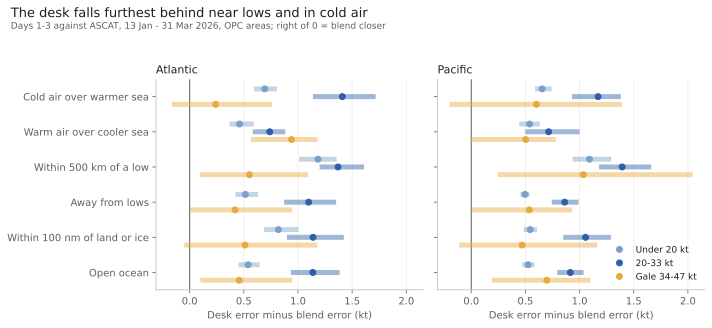
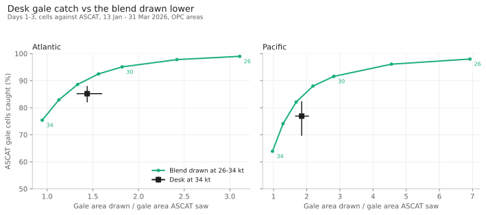

At a glance
- Below storm force the blend is closer to ASCAT than the desk in both basins, on days 1 to 5, in every band and every situation tested.
- 20-33 kt water is where the desk loses most: about 1.1 kt Atlantic and 0.9 kt Pacific (days 1-3). The desk reads about 2 kt high there.
- Under 20 kt the gap is about half a knot. In gale water it is about half a knot, and on day 1 in the Atlantic the two are even.
- Near lows the desk falls furthest behind (about 1.4 kt in 20-33 kt water). Warm air over a cooler sea is where it is closest.
- Gale areas: the desk catches more ASCAT gale water than the blend at 34 kt, but only by drawing more area. The blend drawn at 32 kt catches more again, over less area than the desk.
1 By wind band and day

- Against ASCAT the desk is 0.4-1.2 kt farther off under 20 kt, 0.8-1.5 kt at 20-33 kt and 0.3-1.5 kt in gale water. The gap grows from day 3.
- Against the analysis the gap looks larger, 1-4 kt in gale water. The analysis is itself a model and smooths the peaks, so read the ASCAT row for how strong.
- Banding by what ASCAT saw instead of by the blend gives the same picture below gale. In gale water the gap shrinks to 0.2-0.3 kt and is not clear of zero.
2 By situation

- Near lows (within 500 km of a centre under 1000 hPa) the desk is 1.1-1.4 kt farther off below gale, against 0.5-1.1 kt away from lows.
- Cold air over a warmer sea (behind fronts) costs more than warm air over a cooler sea (warm sector) at 20-33 kt: 1.4 vs 0.7 kt Atlantic, 1.2 vs 0.7 kt Pacific.
- Coasts and ice edges look no different from open ocean. ASCAT is blind in the first 25-30 km offshore, so a barrier jet right at the coast is not tested here.
3 Gale areas

- At 34 kt the blend catches 75% of ASCAT gale cells in the Atlantic and 64% in the Pacific, over about the right area (0.95x). The desk catches 85% and 77%, over 1.4x and 1.8x the area (days 1-3).
- Drawn at 32 kt, the blend catches 89% Atlantic over 1.3x and 82% Pacific over 1.7x. That is more gale caught over less area than the desk drew. A blend line at 31-33 kt does this on every day 1 to 5 in both basins. The only exceptions are three thin slices, where the desk held its own: Atlantic coasts on day 3, and Pacific coasts and near lows on day 1.
- So the desk's extra gale catch comes from drawing more area, not from knowing where. A lower line on the blend does it better.
What this means for desk time
- Outside storm cores, the blend as it stands was closer to ASCAT than the issued grid everywhere tested, most of all near lows. (The desk's edits still beat an automatic update of its own previous grid; it is the starting grid that the blend beats.)
- This backs step 7 of the forecast recipe: spend desk time on storm cores and warning areas, and start the rest from the blend.
What to watch for
- One winter half. The desk grids cover OPC water only from 13 January 2026, so this is 12 weeks. The RSS ASCAT feed stopped on 12 October 2026, so this winter is not scored yet.
- ASCAT's share. At 00/12Z ASCAT sees about 44% of the Atlantic water scored against the analysis, and about 2% of the Pacific. The Pacific rests on the 06/18Z passes.
- The desk grid is the issued wind speed. Warnings in the text and the HSF wording are not scored here.
- Core Lifted differs from the blend only in storm and gale cores. Its replay exists for just two of these weeks, where it caught gale like the blend (66% vs 67%), too few weeks to score on its own.